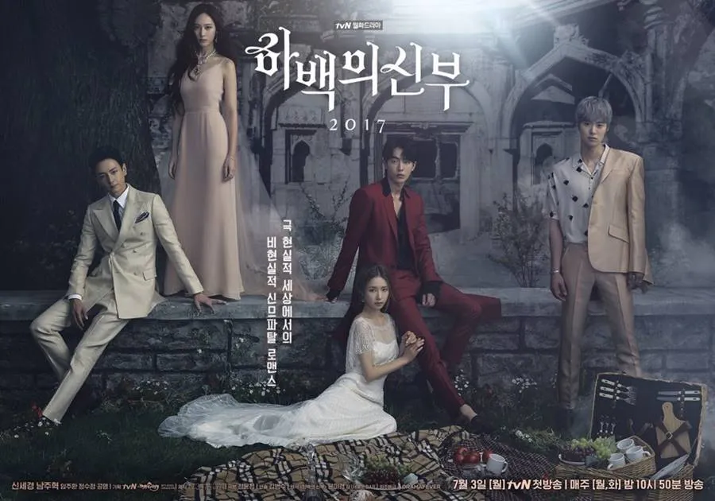
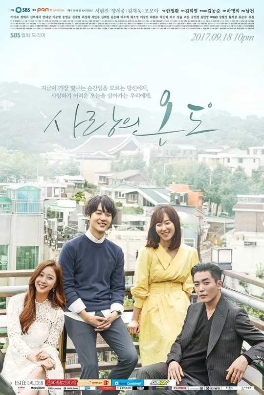
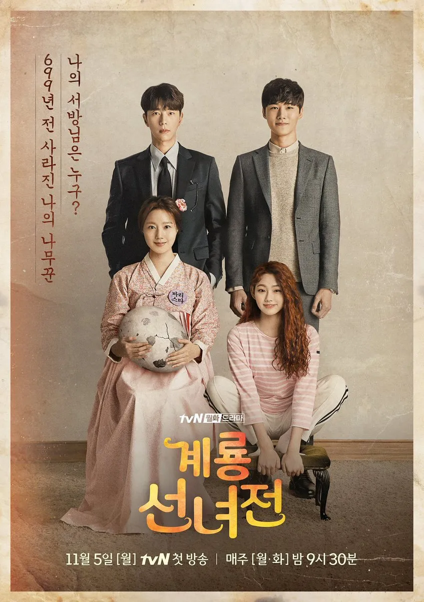
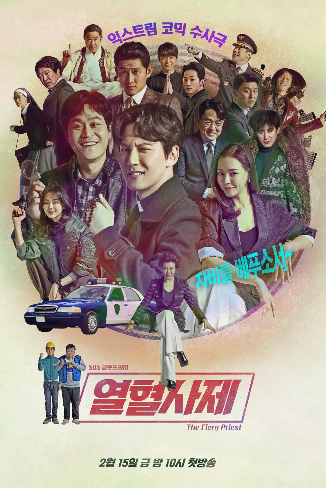
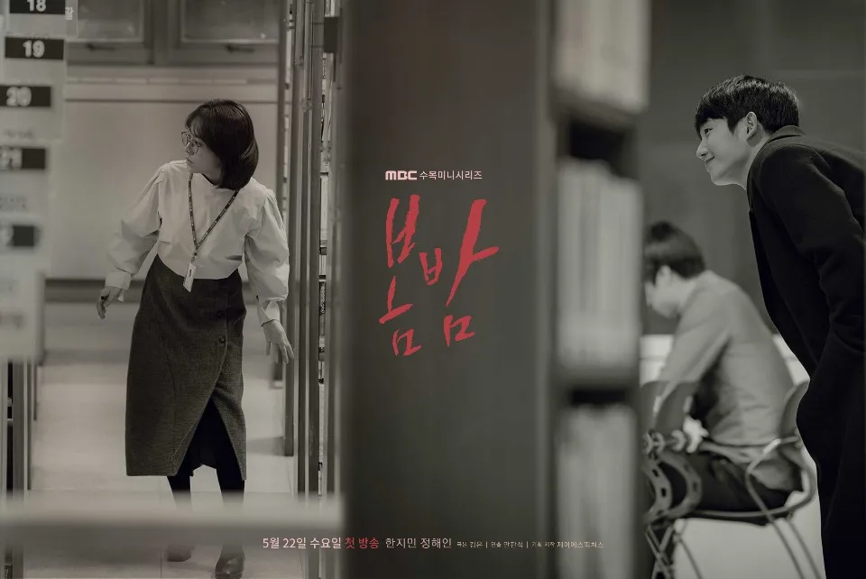
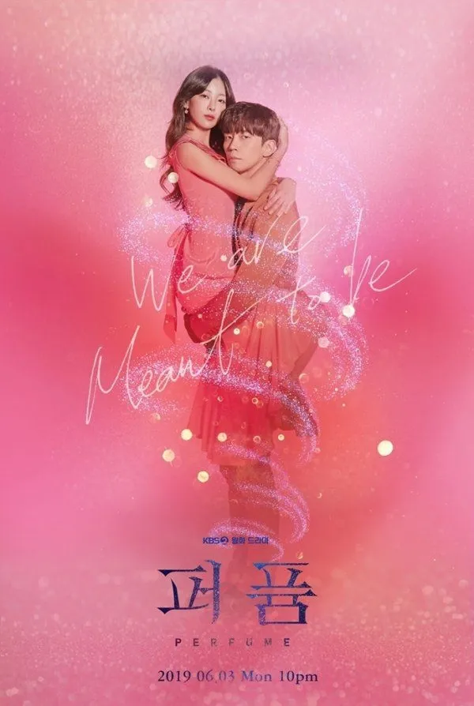
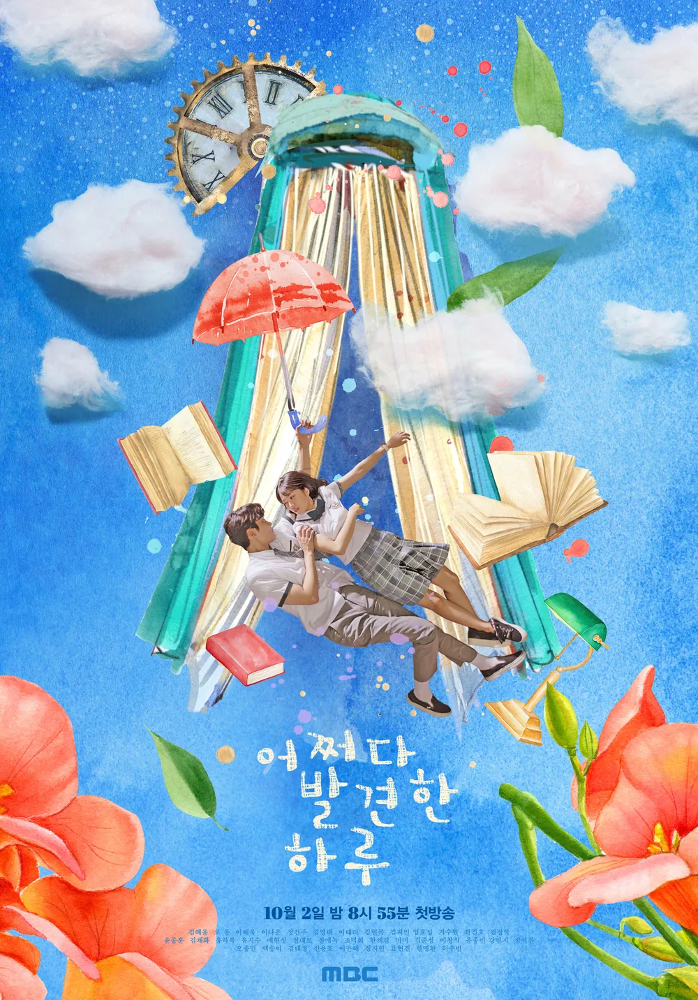
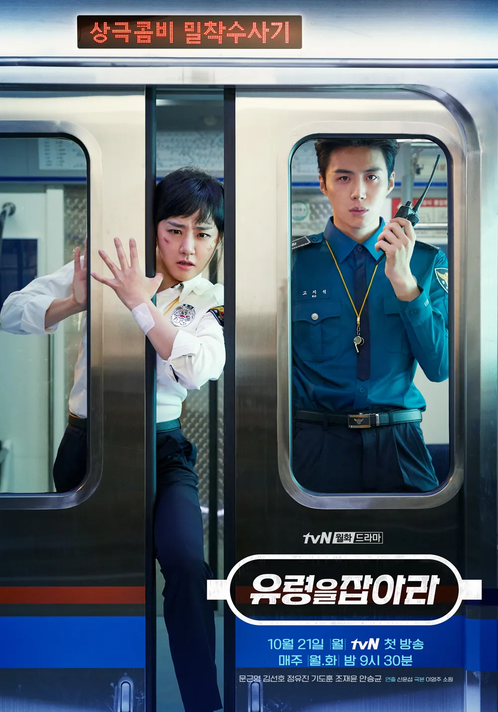

이야기를 따라 걷다
이어진 동행 : 35작품-

- 하백의 신부 2017
- 2017.07.03 ~ 2017.08.22
- 16부작 / 15세이상
- 만화 <하백의 신부> 스핀오프! 2017년, 인간 세상에 내려온 물의 신(神) '하백'과 대대손손 신의 종으로 살 팔자로, 극 현실주의자인척하는 여의사 '소아'의 신(神)므파탈 코믹 판타지 로맨스
-
- 명불허전
- 2017.08.12 ~ 2017.10.01
- 16부작 / 15세이상
- 침을 든 조선 최고의 한의사 허임과 메스를 든 현대 의학 신봉자 외과의 연경이 400년을 뛰어넘어 펼치는 조선 왕복 메디활극
-

- 사랑의 온도
- 2017.09.18 ~ 2017.11.21
- 40부작 / 15세이상
- 온라인 채팅으로 시작해 현실에서 만나게 된 드라마 작가 지망생 '제인'과 프렌치 쉐프를 꿈꾸는 '착한 스프' 그리고 다양한 주변 인물들을 통해 피상적인 관계에 길들여져 있는 청춘들의 사랑과 관계를 그린 드라마
-
- 당신이 잠든 사이에
- 2017.09.27 ~ 2017.11.16
- 32부작 / 15세이상
- 누군가에 닥칠 불행한 사건, 사고를 꿈으로 미리 볼 수 있는 여자와 그 꿈이 현실이 되는 것을 막기 위해 고군분투하는 검사의 이야기
-

- 뷰티 인사이드
- 2018.10.01 ~ 2018.11.20
- 16부작 / 15세이상
- 한 달에 일주일 타인의 얼굴로 살아가는 여자와 일 년 열두 달 타인의 얼굴을 알아보지 못하는 남자의 조금은 특별한 로맨스를 그린 드라마
-

- 계룡선녀전
- 2018.11.05 ~ 2018.12.25
- 16부작 / 15세이상
- 전래동화 '선녀와 나무꾼' 비하인드가 궁금해? 699년 동안 계룡산에서 나무꾼의 환생을 기다리며 바리스타가 된 선녀 선옥남이 '정이현과 김금' 두 남자를 우연히 만나면서 벌어지는 이야기
-

- 열혈사제
- 2019.02.15 ~ 2019.04.20
- 40부작 / 15세이상
- 다혈질 가톨릭 사제와 구담경찰서 대표 형사가 한 살인사건으로 만나 공조 수사에 들어가는 이야기
-

- 봄밤
- 2019.05.22 ~ 2019.07.11
- 32부작 / 15세이상
- 봄밤은 알고 있다. 당신이 사랑에 빠지리라는 것을.
-

- 퍼퓸
- 2019.06.03 ~ 2019.07.23
- 32부작 / 15세이상
- 인생을 통째로 바쳐 가족을 위해 헌신했지만, 한 가정을 파괴하고 절망에 빠진 중년 여자와 사랑에 도전해볼 용기가 없어서 우물쭈물하다가 스텝이 꼬여버린 남자의 이야기를 담은 드라마
-
- 검색어를 입력하세요 WWW
- 2019.06.05 ~ 2019.07.25
- 16부작 / 15세이상
- 트렌드를 이끄는 포털사이트, 그 안에서 당당하게 일하는 여자들과 그녀들의 마음을 흔드는 남자들의 리얼 로맨스
-

- 어쩌다 발견한 하루
- 2019.10.02 ~ 2019.11.21
- 32부작 / 15세이상
- 여고생 단오가 정해진 운명을 거스르고 사랑을 이뤄내는 본격 학원 로맨스 드라마
-

- 유령을 잡아라
- 2019.10.21 ~ 2019.12.10
- 16부작 / 15세이상
- '첫차부터 막차까지! 우리의 지하는 지상보다 숨 가쁘다!' 시민들의 친숙한 이동 수단 지하철! 그곳을 지키는 지하철 경찰대가 '지하철 유령'으로 불리는 연쇄살인마를 잡기 위해 사건을 해결해가는 상극콤비 밀착수사기